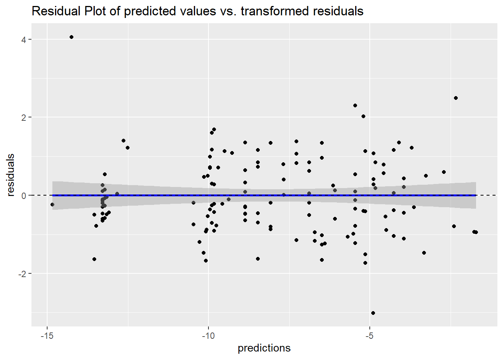
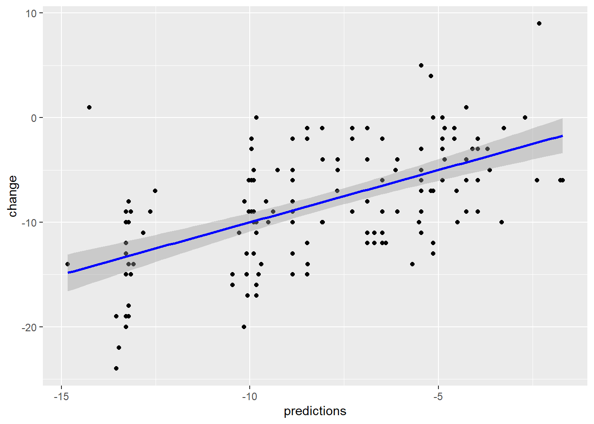

This section will focus on the application of Mixed Model with Repeated Measures (MMRMs). Our main focus will be the modeling of the means of the data. MMRMs are generalizations of standard linear models in the way that data is allowed to be correlated between subsequent measurements from the same subject and exhibit non-constant variability. A nice summary can be found in the user manual for the MIXED Procedure SAS, or the vignette for the mmrm package (Sabanes Bove et al. 2024).
The primary assumptions for MMRMs are:
The data are normally distributed
The means (expected values) of the data are linear in terms of a certain set of parameters.
The variances and covariances of the data are in terms of a different set of parameters, and they exhibit a structure matching one of those outlined in the former chapter.
The mixed linear model can be described via the following formula
\[
y_i = X_i\beta\,+\,Z_i\gamma_i\,+\,\varepsilon_i\,,\, i = 1,\ldots,N
\]
where \(y\) is the vector of responses (observed data, dependent variable), \(\beta\) is an unknown vector of fixed effects with known design matrix \(X\), \(\gamma\) is an unknown vector of random effects with known design matrix \(Z\), and \(\varepsilon\) is an unknown random error vector. Furthermore \(N\) denotes the total number of subjects in our analysis. For the sake of readability, we will omit the subject index and simplify the above formula to
\[
y = X\beta\,+\,Z\gamma\,+\,\varepsilon\,.
\]
We will further assume that \(\gamma\) and \(\varepsilon\) are uncorrelated Gaussian random variables with expectation \(0\) and variances \(G\) and \(R\), respectively. Then the variance-covariance matrix of \(y\) is given by
\[
\text{Var}(y) := V = ZGZ' + R\,.
\] In this case \(ZGZ'\) comprises the random effects component, and \(R\) is the within-subject component.
In this workshop we will focus on the case where only the within-subject component is accounted for, via modeling of the \(R\) matrix. The random effects component \(Z\gamma\) will be omitted. In this case we will have \(\text{Var}(y) = V = R\), resulting in a model given by
\[
y = X\beta\,+\,\varepsilon\,.
\]
Mixed Model vs MMRM
The key difference between MMRM (Mixed Model for Repeated Measures) and the more general Mixed Model lies in how they handle repeated measurements and the assumptions they make about the data.
MMRM is specifically designed for longitudinal or repeated measures data, such as clinical trials where the same subjects are measured multiple times over different time points. It allows for flexible covariance structures that model the within-subject correlation over time, making it especially useful for analyzing treatment effects that change over time.
In contrast, the general mixed model can be used for a wider range of data, including nested or hierarchical structures, and is not limited to longitudinal data. While mixed models also handle repeated measures, they are often applied in contexts where the focus is on individual-level variability through random effects (e.g., random intercepts and slopes), whereas MMRM focuses on the treatment effect over time without including random slopes or intercepts.
When it comes to handling missing data, MMRM assumes the data is missing at random (MAR) and can produce unbiased estimates without the need for data imputation. This makes it particularly advantageous in clinical trials where patients may drop out over time. Mixed models also handle missing data but are not specifically tailored for time-dependent missingness.
In terms of covariance structure, MMRM is more flexible and allows modeling of timepoint correlations using an unstructured covariance matrix, providing a more detailed understanding of how outcomes change over time. In comparison, general mixed models are typically less focused on modeling timepoint-specific covariance and more focused on individual-level random effects.
Lastly, MMRM mainly deals with fixed effects, especially treatment and time, while handling within-subject correlations via covariance structures. It typically does not include random intercepts or slopes, unlike general mixed models, which often include both fixed and random effects to account for individual-level variability and differences in baseline or rates of change. This makes MMRM simpler and more focused on treatment effects over time, whereas general mixed models provide more flexibility in modeling variability between individuals.
In summary, MMRM is a specialized form of mixed model used primarily for repeated measures in longitudinal data, particularly in clinical settings, with a focus on time-varying treatment effects and handling missing data effectively. General mixed models are more versatile and used in broader contexts, often including random effects to account for variability between subjects or nested data structures.
Categorical Time (NOT using time from randomization)
In the following sections we will use the package mmrm(Sabanes Bove et al. 2024). You can start and familiarise yourself with the main function mmrm() using the command
Two inputs are strictly required to get mmrm() to work:
A model formula
The dataset, containing the response, as well as all fixed effects and variables in the covariance matrix.
Exercise: Fit a model fit_cat_time using the dataset all2, with change as dependent variable, baseline value, visit, baseline by visit interaction and treatment by visit interaction as fixed effects and an unstructured covariance matrix for visits within each subject.
How do different choices for covariance matrices change the results? What is the difference on the estimation procedure?
You can obtain a summary of the fit results via summary(fit_cat_time). How do you interpret the fit summary?
Look at the structure of the fit summary and try to extract the estimate of the \(R\) matrix.
How do other choices of covariance structures influence the estimation?
# Extract AIC and BIC values for the modelsaic_values <-c(AIC(fit_cat_time_un),AIC(fit_cat_time_toep),AIC(fit_cat_time_toeph),AIC(fit_cat_time_sp))bic_values <-c(BIC(fit_cat_time_un),BIC(fit_cat_time_toep),BIC(fit_cat_time_toeph),BIC(fit_cat_time_sp))# Extract fixed effect coefficients from each modelcoef_un <-summary(fit_cat_time_un)$coefficientscoef_toep <-summary(fit_cat_time_toep)$coefficientscoef_toeph <-summary(fit_cat_time_toeph)$coefficientscoef_sp <-summary(fit_cat_time_sp)$coefficients# Combine AIC, BIC, and coefficients into a summary tablecomparison_table <-data.frame(Model =c("Unstructured", "Toeplitz", "Heterogeneous Toeplitz", "Spatial Power"),AIC = aic_values,BIC = bic_values)# Display the summary of goodness of fit (AIC and BIC)comparison_table %>%kable(caption ="Goodness of Fit Comparison (AIC, BIC)", format ="html") %>%kable_styling(latex_options ="striped")
Goodness of Fit Comparison (AIC, BIC)
Model
AIC
BIC
Unstructured
822.4105
833.8826
Toeplitz
818.5753
824.3114
Heterogeneous Toeplitz
820.4111
829.9712
Spatial Power
818.5262
822.3503
# Extract the Estimate (fixed effect coefficients) from each modelestimates_un <-summary(fit_cat_time_un)$coefficients[, "Estimate"]estimates_toep <-summary(fit_cat_time_toep)$coefficients[, "Estimate"]estimates_toeph <-summary(fit_cat_time_toeph)$coefficients[, "Estimate"]# Combine the estimates into a data frame for comparisonestimate_comparison <-data.frame(Term =names(estimates_un), # Assuming all models have the same termsUnstructured = estimates_un,Toeplitz = estimates_toep,Heterogeneous_Toeplitz = estimates_toeph)# Display the table of estimatesestimate_comparison %>%kable(caption ="Comparison of Estimates for the Three Models", format ="html") %>%kable_styling(latex_options ="striped")
Comparison of Estimates for the Three Models
Term
Unstructured
Toeplitz
Heterogeneous_Toeplitz
(Intercept)
(Intercept)
1.9845205
1.9845205
1.9845205
basval
basval
-0.3123495
-0.3123495
-0.3123495
avisitWeek 4
avisitWeek 4
-0.9086176
-0.9086176
-0.9086176
avisitWeek 8
avisitWeek 8
-10.5863002
-10.5863002
-10.5863002
groupArm 2
groupArm 2
-1.1899278
-1.1899278
-1.1899278
basval:avisitWeek 4
basval:avisitWeek 4
-0.0854234
-0.0854234
-0.0854234
basval:avisitWeek 8
basval:avisitWeek 8
0.2477929
0.2477929
0.2477929
avisitWeek 4:groupArm 2
avisitWeek 4:groupArm 2
-0.8010032
-0.8010032
-0.8010032
avisitWeek 8:groupArm 2
avisitWeek 8:groupArm 2
-2.2010594
-2.2010594
-2.2010594
tab_model(fit_cat_time_un,fit_cat_time_sp)
Warning: The `full` argument of `model.frame.mmrm_tmb()` is deprecated as of mmrm 0.3.
ℹ The deprecated feature was likely used in the mmrm package.
Please report the issue at <https://github.com/openpharma/mmrm/issues>.
change
change
Predictors
Estimates
CI
p
Estimates
CI
p
(Intercept)
1.98
-4.60 – 8.57
0.547
1.98
-5.07 – 9.04
0.577
basval
-0.31
-0.63 – 0.01
0.055
-0.31
-0.65 – 0.03
0.073
avisit [Week 4]
-0.91
-5.73 – 3.92
0.707
-0.91
-5.38 – 3.57
0.687
avisit [Week 8]
-10.59
-17.55 – -3.63
0.004
-10.59
-17.57 – -3.60
0.003
group [Arm 2]
-1.19
-3.75 – 1.37
0.355
-1.19
-3.93 – 1.55
0.390
basval × avisit [Week 4]
-0.09
-0.32 – 0.15
0.467
-0.09
-0.30 – 0.13
0.437
basval × avisit [Week 8]
0.25
-0.09 – 0.59
0.147
0.25
-0.09 – 0.59
0.151
avisit [Week 4] × group [Arm 2]
-0.80
-2.68 – 1.07
0.395
-0.80
-2.54 – 0.94
0.362
avisit [Week 8] × group [Arm 2]
-2.20
-4.91 – 0.50
0.108
-2.20
-4.91 – 0.51
0.111
N
50 subject
50 subject
Structure
Description
ad
Ante-dependence
adh
Heterogeneous ante-dependence
ar1
First-order auto-regressive
ar1h
Heterogeneous first-order auto-regressive
cs
Compound symmetry
csh
Heterogeneous compound symmetry
toep
Toeplitz
toeph
Heterogeneous Toeplitz
us
Unstructured
Continuous Time
Time as continuous effect -> single df for time and trt-by-time interaction
Modeling: - Need avisit for structure of covariance matrix - Implicit assumption is for the covariance between values for two timepoints to be equal, regardless of the specific timing
LS Means are means of the dependent variable adjusted for covariates in the statistical model. We can obtain LS Means estimates and contrasts allowing for a treatment comparison using the emmeans package.
Example: Calculate the observed (raw) means of changes along with number of patients by treatment group from the dataset all2 overall and by visit. Then take the model fit_cat_time and derive the respective LS Means from the model. What do you observe?
In the example above we have used the standard option for the weights in the calculation of LS Means. We will delve deeper into the following two options and will try to understand the difference:
weights = "equal": Each stratum induced by covariate levels is assigned the same weight in the calculation of the LS Means. This is the default option.
weights = "proportional": Each stratum induced by covariate levels is assigned a weight according to their observed proportion in the calculation of the LS Mean. This option gives each stratum a weight corresponding to its size. Estimates using this option are reflective of the balance of covariates in the data.
Exercise: Based on the fit_cat_time model, compare the LS Means for the change in the response variable by treatment overall and treatment by visit interaction using the different options for weight. Compare the results for the two LS Means options to the observed means and to one another.
Discuss the following points:
Why is there no difference between LS Means estimates for the overall treatment effect and the treatment by visit interaction? (Hint: Create a frequency table)
Solution: Balanced Data: If the data is perfectly balanced (e.g., equal sample sizes across visits, no missing data), then the LS Means estimates of the treatment effect at each visit might aggregate to the same result as the overall treatment effect. The overall treatment effect is simply an average of the effects at each visit.
## LS Means estimates for the overall treatment effectemmeans(fit_cat_time, ~trt)
NOTE: Results may be misleading due to involvement in interactions
trt emmean SE df lower.CL upper.CL
1 -6.90 0.836 47 -8.58 -5.22
2 -9.09 0.836 47 -10.77 -7.41
Results are averaged over the levels of: avisit
Confidence level used: 0.95
# trt emmean SE df lower.CL upper.CL# 1 -6.90 0.836 47 -8.58 -5.22# 2 -9.09 0.836 47 -10.77 -7.41### Work with code chunks to find the solution to the exercisesall2 %>% dplyr::group_by(group,avisit) %>% dplyr::summarise(N = dplyr::n(),Mean =mean(change),.groups ="drop" )
# A tibble: 6 × 4
group avisit N Mean
<fct> <fct> <int> <dbl>
1 Arm 1 Week 2 25 -4.2
2 Arm 1 Week 4 25 -6.8
3 Arm 1 Week 8 25 -9.88
4 Arm 2 Week 2 25 -5.24
5 Arm 2 Week 4 25 -8.6
6 Arm 2 Week 8 25 -13.2
emmeans(fit_cat_time, ~trt, weights ="equal")
NOTE: Results may be misleading due to involvement in interactions
trt emmean SE df lower.CL upper.CL
1 -6.90 0.836 47 -8.58 -5.22
2 -9.09 0.836 47 -10.77 -7.41
Results are averaged over the levels of: avisit
Confidence level used: 0.95
NOTE: Results may be misleading due to involvement in interactions
trt emmean SE df lower.CL upper.CL
1 -6.90 0.836 47 -8.58 -5.22
2 -9.09 0.836 47 -10.77 -7.41
Results are averaged over the levels of: avisit
Confidence level used: 0.95
Now update the fit_cat_time model to fit_cat_time2, and include the covariate gender. Estimate the same LS Means for the change in the response variable by treatment (overall) and treatment by visit interaction.
'emmGrid' object with variables:
basval = 19.56
avisit = Week 2, Week 4, Week 8
trt = 1, 2
gender = F, M
# A tibble: 12 × 5
group avisit gender N Mean
<fct> <fct> <chr> <int> <dbl>
1 Arm 1 Week 2 F 10 -4.7
2 Arm 1 Week 2 M 15 -3.87
3 Arm 1 Week 4 F 10 -6.9
4 Arm 1 Week 4 M 15 -6.73
5 Arm 1 Week 8 F 10 -8.9
6 Arm 1 Week 8 M 15 -10.5
7 Arm 2 Week 2 F 19 -6.79
8 Arm 2 Week 2 M 6 -0.333
9 Arm 2 Week 4 F 19 -9.53
10 Arm 2 Week 4 M 6 -5.67
11 Arm 2 Week 8 F 19 -13.9
12 Arm 2 Week 8 M 6 -11
What effect could missing data have on the estimation, even in the case of fit_cat_time? I.e. what would happen if this data was not complete but subject to missingness, with the degree of missing data increasing over time and being disproportionate between treatment arms?
Imbalanced Representation Over Time: If the degree of missingness increases over time, estimates of later visits will be based on fewer patients, reducing the reliability of treatment effects at those time points. The treatment-by-visit interaction estimates could become unstable.
Missing Not at Random (MNAR): If missingness is related to unobserved outcomes (e.g., patients drop out because of worsening symptoms in one treatment group), this could bias the estimation. In particular, the treatment effect estimates could be skewed, either exaggerating or underestimating the true treatment difference.
Contrasts
Most of the times, the quantity we are truly interested in when reading out a study, is the contrast between treatment arms. This contrast can be built either based on LS Means at some landmark time point, or as a longitudinal (linear) combination of LS Means from multiple time points.
We can use the pairs() or the contrast() functions, where the latter provides more flexibility for the calculation of linear combinations from multiple timepoints.
### This is the same as the followingprs <-contrast(lsmns, method ="revpairwise", adjust =NULL)prs <-contrast(lsmns, method ="revpairwise", adjust ="tukey")
Adjustment Method
Description
“tukey”
Uses the Studentized range distribution with the number of means in the family. (Available for two-sided cases only.)
“scheffe”
Computes p-values from the F distribution, according to the Scheffe critical value of rF(α; r, d), where d is the error degrees of freedom and r is the rank of the set of linear functions under consideration. By default, r is computed from object@linfct for each group. If there are k means involved, r = k - 1 for a full set of contrasts, and r = k for the means themselves. (Available for two-sided cases only.)
“sidak”
Makes adjustments as if the estimates were independent (a conservative adjustment in many cases).
“bonferroni”
Multiplies p-values or divides significance levels by the number of estimates. This is a conservative adjustment.
“dunnettx”
Uses an ad hoc approximation to the Dunnett distribution for a family of estimates with pairwise correlations of 0.5 (common when comparing treatments with a control with equal sample sizes). This method is faster than “mvt” and the approximation improves with the number of estimates. (Available for two-sided cases only.)
“mvt”
Uses the multivariate t distribution to assess the probability or critical value for the maximum of k estimates. Produces the same p-values and intervals as the default methods in as.glht. Monte Carlo simulation is used, so results may vary unless the same random-number seed is used. Computation time increases with family size, making “tukey” or “dunnettx” more attractive alternatives for large families.
“none”
No adjustments are made to the p-values.
Note that both pairs() and contrast() provide multiple options for fine-tuning. We chose adjust = NULL in order to not perform any multiplicity adjustment (default method would have been the Tukey method). We also chose reverse = TRUE to reverse the order of comparisons performed by pairs(), as the default would have given us the contrast for Treatment 1 - Treatment 2. Consequently, we applied method = "revpairwise" in the contrast() function.
We can obtain the coefficients in the calculation of the contrasts via coef():
The output above is probably more than we wanted. We are only interested in contrasts between Treatments 1 and 2 at the same time points. Here contrast() provides more flexibility. Instead of parsing a string with the name of a method to the method argument, we provide a named list of coefficients. These coefficients are identical with the onces we can see in the coefficient matrix above. We can use it as a guide.
contrast( lsmns, method =list("Difference Trt 2 - Trt 1 at Week 4"=c(0, 0, -1, 1, 0, 0),"Difference Trt 2 - Trt 1 at Week 8"=c(0, 0, 0, 0, -1, 1) ), adjust =NULL)
contrast estimate SE df t.ratio p.value
Difference Trt 2 - Trt 1 at Week 4 -1.99 1.30 47 -1.536 0.1313
Difference Trt 2 - Trt 1 at Week 8 -3.39 1.46 47 -2.319 0.0248
This way of computing LS Means from our MMRM allows us to calculate all kinds of linear combinations of LS Means. Assume we were interested in the longitudinal mean of changes from baseline averaged over Weeks 2, 4 and 8. This would look like this:
contrast( lsmns, method =list("Difference Trt 2 - Trt 1 Averaged over Weeks 2, 4 and 8"=c(-1, 1, -1, 1, -1, 1)/3 ), adjust =NULL)
contrast estimate SE df
Difference Trt 2 - Trt 1 Averaged over Weeks 2, 4 and 8 -2.19 1.18 47
t.ratio p.value
-1.850 0.0705
Fit diagnostics
The following section closely follows the content in Chapter 10 in (Fitzmaurice 2011).
Our analysis should be concluded with a look into the fit diagnostics, more specifically, the residuals. Residuals are defined by the difference between the true responses and the fitted values from the model:
\[
r := y - X\hat\beta\,,
\]
where \(\hat\beta\) are the estimated coefficients from our model. Residuals provide an estimate of the true vector of random errors
\[
\varepsilon = y - X\beta\,.
\]
As per our modeling assumptions, \(\varepsilon\) should follow a normal distribution with mean zero. The mean of the residuals is zero and therefore identical with the mean of the error term. For the covariance of the residuals however, the variance-covariance matrix of \(\varepsilon\) only serves us as an approximation (as suggested by (Fitzmaurice 2011) for all ‘practical applications’):
\[
Cov(r) \approx Cov(\varepsilon) = R\,.
\]
This assumption has several implications on the residual diagnostics:
The variance is not necessarily constant. Plotting the fitted values versus the residuals might therefore lead to a non-constant range. An examination of the residual variance or autocorrelation among residuals is therefore not very meaningful.
Residuals from analyses of longitudinal data can exhibit correlation with the covariates. Scatterplots of residuals versus selected covariates can therefore reveal systematic trends (which normally should not be the case).
A transformation of residuals to achieve constant variance and zero correlation is therefore often useful. This transformation uses the so-called Cholesky decomposition of the variance-covariance matrix \(R\). Let \(L\) be a lower triangular matrix, such that
\[
R = L\,L'\,,
\]
then the transformed residuals are given by
\[
r^* = L^{-1}(y - X\beta)\,.
\]
In the mmrm package, transformed residuals can be derived using the type = "normalized" option.
Exercise: Which visualisations can you think of that make sense to assess the goodness of fit here? Create a new tibble (or data.frame) containing the variables of importance and try plotting them in a meaningful way. Discuss the results within your group.
Solution:
Extract Residuals
residuals(fit, type = “response”), Response or raw residuals - the difference between the observed and fitted or predicted value.
residuals(fit, type = “pearson”), Pearson residuals - the raw residuals scaled by the estimated standard deviation of the response.
residuals(fit, type = “normalized”), Normalized or scaled residuals - the raw residuals are ‘de-correlated’ based on the Cholesky decomposition of the variance-covariance matrix.
To avoid repetition, let us first save the important variables to perform fit diagnostics in a tibble.
df_residuals <- dplyr::tibble(residuals =residuals(fit_cat_time, type ="normalized"),predictions =fitted(fit_cat_time), all2)
Histogram
We can firstly look into a histogram of transformed residuals. The shape should resemble the density function of normal distribution with mean zero and positive variance. Superimposing the density function with mean and SD derived from the model residuals, let’s us see that this is indeed the case. We can also detect a slight skewness to the right.
df_residuals %>%ggplot(aes(x = residuals)) +geom_histogram(aes(y =after_stat(density)), fill='lightgray', col='black') +stat_function(fun = dnorm, args =list(mean=mean(df_residuals$residuals), sd=sd(df_residuals$residuals)), col='red', lwd=1) +ggtitle(label ="Histogram of transformed residuals",subtitle ="Normal density with mean and SD of residuals superimposed" )
We can use the following fourfold table to assess the shape characteristics derivable from this plot, depending on where the data on which end of the plot is bend compared to the linear trend line:
Upper right corner
Above
Below
Lower left corner
Above
Skewed to the right
Light-tailed
Lower left corner
Below
Heavy-tailed
Skewed to the left
We can see that our data is skewed to the right, as the data in the upper right corner and data in the lower left corner of the plot bend above the linear trend line. This is also a trend we can observe from the histogram.
Residual Plot
df_residuals %>%ggplot(aes(x = predictions, y = residuals)) +geom_point() +geom_smooth(method = lm, color ="blue") +geom_hline(yintercept =0, show.legend =FALSE, linetype =2) +ggtitle(label ="Residual Plot of predicted values vs. transformed residuals" )

What do we see?
The points in the plot look well dispersed and symmetric around zero. The fitted line shows no departure from zero.
There is no systematic trend, but a rather random scatter.
We can spot a couple of outliers.
df_residuals %>%ggplot(aes(x = predictions, y = change)) +geom_point() +geom_smooth(method = lm, color ="blue")

Baseline as a Response (cLDA + LDA)
In the former examples we used baseline severity as a continuous covariate, which is the most common approach. In this case we treat baseval as a fixed effect and used changes from baseline as response variable in our model formula. This approach comes with a couple of caveats:
Only subjects with a non-missing baseline and at least one non-missing follow-up response contribute to the analysis (i.e. at least one non-missing change from baseline value).
Only subjects with complete covariate data contribute to the analysis.
Hence, if baseval is missing for a subject, this subject will not be included in our model. (Liang and Zeger 2000) introduced the so-called LDA (longitudinal data analysis) and cLDA (constrained longitudinal data analysis) models. The basic idea behind these models is that baseline can be regarded as a response at Time 0, and can therefore be included in the vector of responses.
In order to fit the model, we need to apply some data wrangling upfront and add baseline to the response column (aval). Note that this step is usually not required when dealing with CDISC compliant datasets, such as ADaM or SDTM.
base <- dplyr::distinct(all2, subject, trt, basval, group, gender) %>% dplyr::mutate(time =0,aval = basval,avisit ="Baseline" )all2_lda <- dplyr::bind_rows(all2, base) %>% dplyr::mutate(avisit = forcats::fct_reorder(avisit, time) )### Check Order of avisit levels:levels(all2_lda$avisit)
[1] "Baseline" "Week 2" "Week 4" "Week 8"
We can now fit a model, including aval as a response variable, treatment (group), visit (avisit) and a treatment-by-time interaction term:
The LS Mean estimates per treatment arm for mean changes to Week 8 (Time 3) are now obtained via contrasts between Week 3 and Baseline:
lsmns <-emmeans(lda, ~group*avisit, weights ="proportional")contrast( lsmns,method =list("LS Means for Change from Baseline to Week 8 Treatment 1"=c(-1, 0, 0, 0, 0, 0, 1, 0),"LS Means for Change from Baseline to Week 8 Treatment 2"=c(0, -1, 0, 0, 0, 0, 0, 1),"LS Means for Difference in Changes to Week 8 btw. Treatment 2 and Treatment 1"=c(1, -1, 0, 0, 0, 0, -1, 1) ), adjust =NULL)
contrast
LS Means for Change from Baseline to Week 8 Treatment 1
LS Means for Change from Baseline to Week 8 Treatment 2
LS Means for Difference in Changes to Week 8 btw. Treatment 2 and Treatment 1
estimate SE df t.ratio p.value
-9.88 1.01 48 -9.768 <.0001
-13.24 1.01 48 -13.089 <.0001
-3.36 1.43 48 -2.349 0.0230
A note on caveats associated with LDA models:
In cases where the treatment effect has a rapid onset, the linearity assumption underlying the model is violated.
Use of baseline as a response, as opposed to a covariate, ignores the predictive nature of baseline severity as an explanatory factor in the residual error.
Generally, LDA models can be very useful in trials with only very few visits per patient due to the additional response value being included. In longer trials however, it is recommended to refrain from their use for the disadvantages stated above. In this case, a decent data quality is key to avoid missing baseline data (if possible completely) and reduce the degree of missingness with regards to follow-up data as much as possible.
Addendum on Linear Mixed Effect Models
In this chapter we have dealt with models where the response is modeled as a linear combination of fixed effect parameters \(\beta\) and a random error \(\varepsilon\)
\[
y = X\beta\,+\,\varepsilon\,.
\]
The fixed effects in this model represent the population effects and we used the random error to model the subject-specific influences. Although we used the term mixed model for repeated measures (MMRM), this nomenclature is misleading in the way that our model does not truly deserve the term mixed. A true mixed model would require the involvement of fixed and random effects. The latter have previously been omitted.
While we will not cover random coefficient models (also known as random slope and intercept models or RS&I models) in depth in this class, we would like to point to couple of useful features. For further reading, one can refer to Chapter 8 in (Fitzmaurice 2011).
The distinction between fixed and random effects in linear mixed effect models allows for modeling of both between-subject and within-subject variations. In random coefficient models (i.e. MMRMs with a non-trivial random effect) each subject is assumed to have their own (linear) rate of response over time, expressed as random slopes and intercepts.
“In addition it is not only possible to estimate parameters that describe how the mean response changes in the population of interest, it is also possible to predict how individual response trajectories change over time. For example, linear mixed effects models can be used to obtain predictions of individual growth trajectories over time.” (Fitzmaurice 2011)
Linear mixed effects models therefore allow for inferences on the individual (subject) basis rather than the entirety of individuals (population).
Another advantage of linear mixed models is their flexibility with respect to imbalances in longitudinal data. We are no longer bound by the restriction to have (approximately) the same number of observations per subject, i.e. the approximately the same length of follow-up, or even for the visits to be taken at the same times. This feature is especially useful whenever we are dealing with parallel design studies, involving the comparison of interventions with different dosing/ assessment frequencies.
Note that the mmrm package so far does not allow for fitting of linear mixed effect models, in the sense that an actual random effects term is included in the model formula. For these kind of models, we point to the package lme4(Bates et al. 2015).
References
Bates, Douglas, Martin Mächler, Ben Bolker, and Steve Walker. 2015. “Fitting Linear Mixed-Effects Models Using lme4.”Journal of Statistical Software 67 (1): 1–48. https://doi.org/10.18637/jss.v067.i01.
Liang, Kung-Yee, and Scott L. Zeger. 2000. “Longitudinal Data Analysis of Continuous and Discrete Responses for Pre-Post Designs.”Sankhyā: The Indian Journal of Statistics, Series B (1960-2002) 62 (1): 134–48. http://www.jstor.org/stable/25053123.
Sabanes Bove, Daniel, Liming Li, Julia Dedic, Doug Kelkhoff, Kevin Kunzmann, Brian Matthew Lang, Christian Stock, et al. 2024. Mmrm: Mixed Models for Repeated Measures. https://openpharma.github.io/mmrm/.